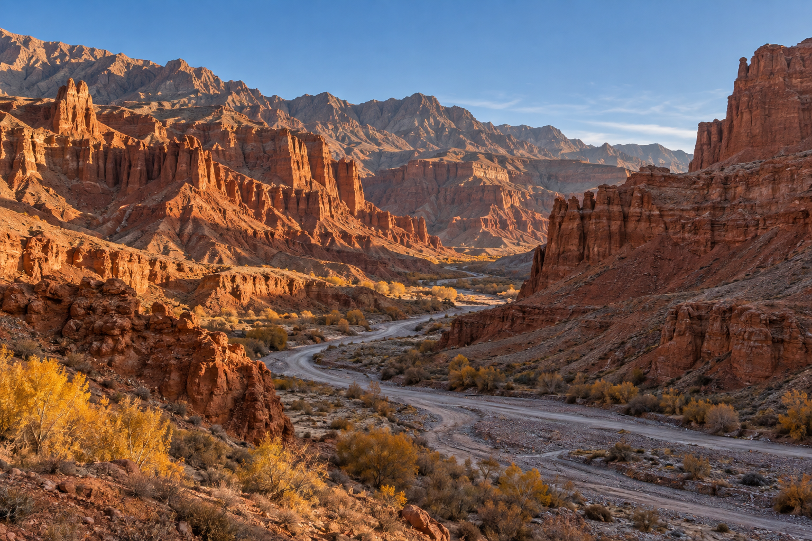
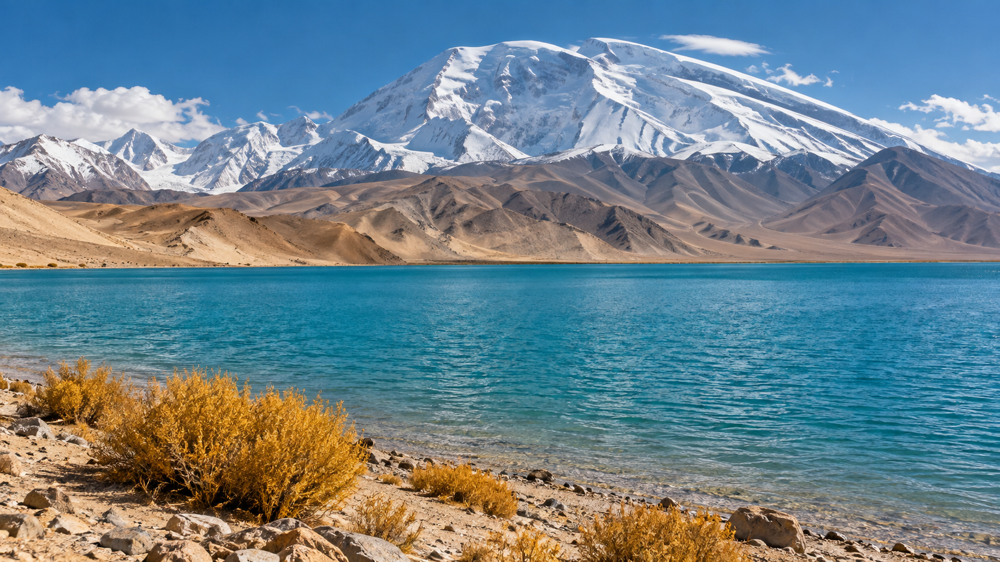

01
深圳 → 乌鲁木齐
飞抵乌鲁木齐，入住后休息。若跟团集合时间较早，建议选择前一天抵达或确认接机时间。
住：乌鲁木齐 · 三餐自理一趟从金色平原走向雪山的旅程
先穿过胡杨、戈壁和赤色峡谷，再沿中巴友谊公路进入帕米尔。行程以风景为主，保留喀什缓冲日；高原路段依天气和交通管制灵活调整。
一路换景
十月的颜色每年略有不同。把风景交给天气，也给途中留一点余量。

沿塔里木盆地边缘，走过秋色和风蚀岩壁。

白沙湖、喀拉库勒湖与慕士塔格峰同框。
沿路慢慢展开
采用乌鲁木齐集合、喀什结束的跟团方向。跨城日车程较长，景点顺序以领队和当日路况为准。
飞抵乌鲁木齐，入住后休息。若跟团集合时间较早，建议选择前一天抵达或确认接机时间。
住：乌鲁木齐 · 三餐自理穿过天山通道，向南进入塔里木盆地。沿途看湿地、胡杨与沙漠边缘地貌。
参考车程约5小时，另留景区游览时间把白天留给塔里木河畔的胡杨林。叶色受当年气温影响，十月中旬不保证全黄。
参考车程约5小时 · 秋色以现场为准走进赭红色峡谷，看风蚀岩层和河谷地貌。峡谷里风大，建议穿便于活动的鞋。
参考车程约5小时，景区停留依团队安排长途转场日。准备水、零食和充电设备，今天不额外安排景点。
参考车程约7小时漫步老城巷道、茶馆与巴扎。放慢节奏，为进入帕米尔高原留出休整时间。
住：喀什 · 可按兴趣自由活动沿中巴友谊公路向高原进发。湖岸、雪峰和荒漠色块一路交错，抵达塔县后早点休息。
参考车程约6小时 · 高原路段看天气沿盘山公路和蓝湖返程。若遇雨雪、大风、施工或临时管制，听从领队安排，改走安全路线。
全天路程较长 · 盘龙古道开放情况需临近确认补逛古城、休息或留作天气调整缓冲。若团期允许，这一天也适合慢慢整理照片和行李。
住：喀什 · 机票建议留出返程余量从喀什返深。优先看直飞班次；若日期不合适，再考虑经乌鲁木齐中转。
返程航班按具体日期查询打包与预订
新疆跨度大，平原和高原温差明显。提前问清团费、住宿和路况安排，会让这趟十月行程更从容。
去程飞乌鲁木齐，回程从喀什出发；按集合日期核实直飞或中转班次。
合同写清人数上限、是否纯玩、双床房安排、景区门票、餐食和天气改线规则。
带防风外套、保暖中层、帽子、手套、墨镜和防晒。塔县早晚明显更冷。
盘龙古道可能因天气或维修临时限行。把它视为条件允许时的重点体验，不要当作必然开放。
预算提示
公开在售的相近8日拼团页面，2026年10月曾标出约 ¥5,599/人作为参考。机票、额外住宿和实际包含项目以出发日期及旅行合同为准。